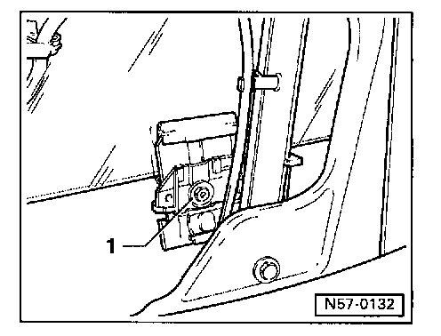

Front Door Window Glass: Service and Repair
Door window, removing
Remove door trim Service and Repair
Partially remove vapor barrier Service and Repair
Pull window slot seal off flange.
Crank door window upward or downward until clamping jaws are located in installation openings.
Remove hex nuts 1 and press clamping jaws apart.
Pull door window upward, tilt toward front and lift out of window slot.